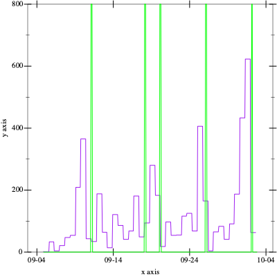

Software Development

“To be any kind of professional means being willing to tell the client a truth he doesn’t want to hear.” – Holman W. Jenkins, Jr.
“I’m still friends with folks I worked with decades ago, many who would beat me up in meetings, ripping apart my arguments with what seemed like an ice pick. Still, they made me better.” – Andy Kessler

From the first day of the semester forward we expect students (you) to visit this page once per 24 hours. It is the only source of truth with respect to milestones and warm-up exercises.

Friday, October 4th, 2024 12:43:31pm
The 01:30pm lecture on 3 October covered a lot of ground, but not the lecture material that had been prepared.
Consider reading the Lecture Notes; they are somewhat rough but they provide a complete picture of the contract work that one day may show up in production shops (and according to at least one student in the 10:30am section is partially used in some places already).

Thursday, October 3rd, 2024 12:43:08pm
Check your Inbox for information about your new partnership.
If you have questions of mechanical nature concerning the swap, ask the TA. For other concerns, see an instructor during office hours.

Wednesday, October 2nd, 2024 4:15:45pm
The following pairs will present some of their 2 —
10:30 Felleisen |
Marvin Chong and Ryan Zhu |
Ryan Tsai and Eric Sun |
Here is a plot of the commit time stamps from all repositories, ranging from the beginning of the semester until today:

The green lines are the deadlines, and the purple function is the number of commits. Notice the purple spikes approaching the green lines.

Tuesday, October 1st, 2024 6:25:35pm
You may wish to run your xeq script (3 —

Monday, September 30th, 2024 4:59:17pm
The following pairs will present some of their 2 —
09:15 Felleisen |
Borui Chen and Stone Liu |
Arthur Efremenko and Tony Lyu Yun |
|
10:30: Lerner |
Kaylee Wu and Jack Bassick |
Jared Lyon and Ahaan Chaudhuri |
|
10:30 Felleisen |
Marvin Chong and Ryan Zhu |
Ryan Tsai and Eric Sun |
|
1:30: Lerner |
Kevin Chen and Jordan Hoffman |
slot 2: open |
|

Friday, September 27th, 2024 4:33:41pm
The following pairs will present some of their 2 —
09:15 Felleisen |
Thomas Dwyer and Nat Philbrick |
Collin McKinley and Ahmed Altunisi |
|
10:30: Lerner |
Alexander Chang-Davison and JunYe Zhang |
Kaylee Wu and Jack Bassick |
|
10:30 Felleisen |
Devashish Sood and Nate White |
Ryan Saperstein and Nishil Patel |
|
1:30: Lerner |
Ben Wakefield and Nick Isidor |
Ethan Saff and Rishi Kanabar |
We will pick panels from the audience. Panelists will also get feedback.
Depending on how Monday goes, we will also run practice sessions on Wednesday, and people who are on the list will be called on to present.
All of you should soon go to the lecture room where you plan to present and get familiar with the AV setup. They differ from building to building, but most rooms still support HDMI cables. Make sure you can connect via HDMI or, if your laptop doesn’t have an HDMI outlet, find an adapter.

Thursday, September 26th, 2024 1:51:51pm
Apologies to my two sections. We will not start with the regular
schedule this week but next. 3 —
The self-evaluation will always come out the morning after the due date, and it will be harvested by 03:00pm on that day.

Thursday, September 26th, 2024 7:32:49am
One of the many articles on Amazon’s return to a five-days-in-the-office week contains the following rationale:
“When employees are in the office, [the Amazon CEO] said, “We’ve observed that it’s easier for our teammates to learn, model, practice, ...., collaborating, brainstorming, and inventing are simpler and more effective; teaching and learning from one another are more seamless; and, teams tend to be better connected to one another.””
That’s why we practice in-person code reviews in Sw Dev and not just the marking up of git pull requests.

Tuesday, September 24th, 2024 7:15:52pm
Thursday Tomorrow morning we will push out the self-evaluation for 2 —

Monday, September 23rd, 2024 4:20:55pm
Please read The Psychology of Programming [chapter 4] by Wednesday or Thursday.
Also, if you’re interested in conducting a practice code-walk in front of an entire section next Monday (30 September 2024), please contact the section’s instructor via email with a CC to your partner. If you are a mixed pair, you may pick any section to present. We will not record a grade for this practice code walk but we will give you full-fledged feedback.
When it comes the soc-psy side of sw dev, there is nothing like practice.

Friday, September 20th, 2024 7:24:49am
Today’s front page of the WSJ reports that Tech Jobs Have Dried
Up—
As someone who has lived through several boom-and-bust cycles in sw dev, all I can say is “it’ll change again, but we don’t know when.”

Thursday, September 19th, 2024 6:55:43pm
The TA team discovered that they were running old software with bugs to push all acceptable tests into your repos. They found the forked and fixed software, and they pushed the correct suite of tests into your repos. Lesson: don’t fork, fix.
Also, don’t forget that we will push out the first self-evaluation tomorrow morning. Answer the question, commit, and push it back to the server.

Wednesday, September 18th, 2024 6:47:00am
The final warm-up exercise, C —
The due dates were originally swapped due to a data entry error. They are now correct.
Now things are really fixed. All software is broken. In this case, it was a problem with the configuration file.

Monday, September 16th, 2024 5:21:09pm
You may wish to run your xgui script (B —

Sunday, September 15th, 2024 6:35:35pm
The Android Media Player interface specification is an illustrative example of how constraints on method-call sequence are documented but not (necessarily) enforced.
Here is the state diagram:


Friday, September 13th, 2024 12:51:12pm
The results of grading A —

Wednesday, September 11th, 2024 6:45:02am
Warm-up exercise B —

Monday, September 9th, 2024 6:04:46pm
Some of you just switched into Sw Dev and today was your first day. Some of you lost your partner over the weekend. Here is what you need to do:
Finish A —
JSON on your own. Keep in mind that this warm-up exercise gets you few points but lots of experience with your chosen programming language.
Make sure Luke assigns you a repository on the College’s GitHub Enterprise system.
It is the only way to submit homework.—
Instructions are below. Email Luke if all else fails. Watch your email on Wednesday because Luke and the instructors will match you up with a new partner and a new repository for the upcoming warm-up exercises and milestones.

Sunday, September 8th, 2024 6:20:35pm
You may wish to run your xjson script (A —
Please also revisit A —

Friday, September 6th, 2024 6:46:58pm
Your GitHub repositories have been created on the College’s Enterprise server. To find it, (1) log into the College’s GitHub; (2) click your profile picture (top right); (3) click "your organizations"; and (4) click "CS4500-F24".
As Fundamentals I probably mentioned, the design recipe generalizes to almost all tasks in our world (and indeed to many tasks in life .. Fundamentals I used to assign an essay on this point). This last step is often formulated as a checklist.
We have automated this test for you with a script in /course/cs4500f24/bin. It implements the checklist below and runs your xjson how our test framework runs it. You can run it like this at the shell prompt on a College’s Linux box:% /course/cs4500f24/bin/check-program-A silly-donkey where silly-donkey must be replaced with the name of your repository.Here is the check list that this script runs (steps 2 through 8):ssh into login-students (or another Linux box);
git-clone your “fuzzy elephant” repo to login-students;
navigate (cd) into this repo;
make sure A exists and navigate there;
run make if you have a Makefile;
check the executable bit of xjson;
run ./xjson and feed it some JSON value;
wait for some time to get an output back; and
make sure the output looks right.
Of course, this checklist (and more) will also apply when you deliver and deploy software on a job.

Thursday, September 5th, 2024 4:57:06pm
See A —

Wednesday, September 4th, 2024 4:00:55pm
1. If you have not found a partner yet and if you haven’t done so yet, please send an email to your instructor and (ideally) Luke J. State which language you would like to use.
Both partners need to supply information on the the sign-up sheet. Meaning, each partner submits the form with the information for both.
2. GitHub repos will be assigned over the next two days. We are waiting for pairing up still-single students and for everyone to have a github handle for the College’s Enterprise system.
3. Please get started on A —

Tuesday, August 27th, 2024 10:17:18am
Once you have found a partner, please use the the sign-up link to get a Northeastern GitHub repository. You and your partner will submit all of your work via this repo and you will get most of your feedback in this repo.
In addition, you will get a “log book repo” to which only you, the instructors, and the technical TA have access. See Lab Book for the purpose of this repo.

Friday, July 26th, 2024 12:30:48pm
Welcome to Software Development Fall 2024.